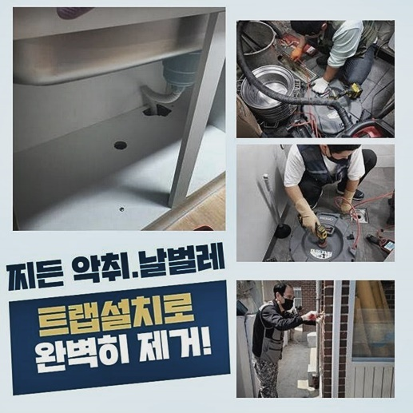
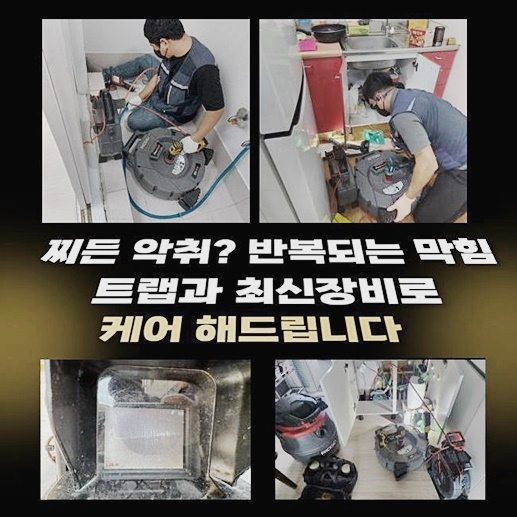
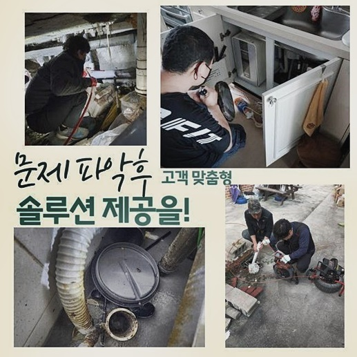
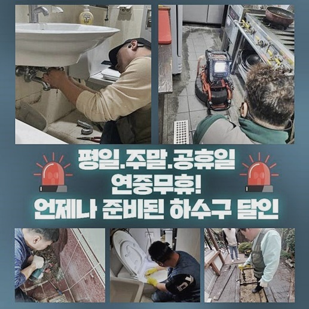
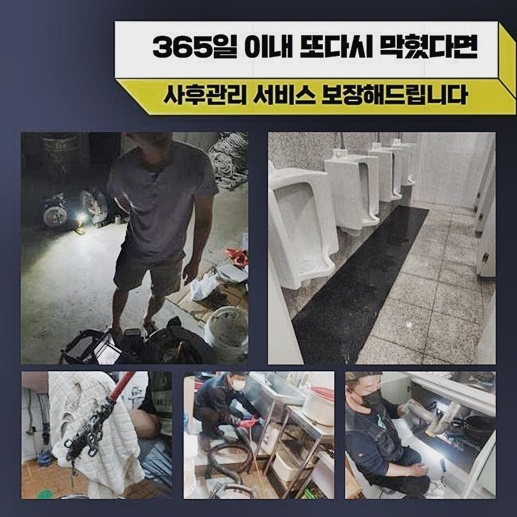
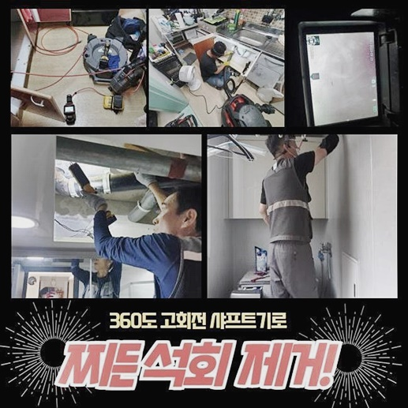
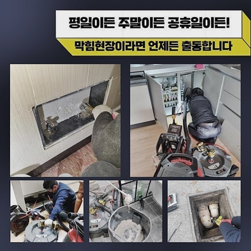

🏠 분당 서현동 씽크대배관막힘 수전교체 부속수리 설비
용인 싱크대막힘 전문 시공 후기

📋 작업 개요
- 위치: 용인
- 서비스 유형: 싱크대막힘, 하수구막힘, 배관막힘, 누수수리, 역류해결, 뚫는업체, 배관청소, 고압세척, 배관보수, 악취차단
- 작업 일시: 2024. 6. 3. 17:10
- 업체명: 하수구수사대 (010-5615-2118)
🔍 문제 상황
분당 서현동 씽크대배관막힘 수전교체 부속수리 설비
아파트나 빌라엔 물을 사용하는 공간이 필수여서 이곳을 통해 각종 이물질이 운집할 수 있답니다
하지만 예측한 것 이상의 잔재들이 제대로 배수설비로 흘러가지 않고 적체돼 트러블이 나타나는 것이죠
샤워나 설거지를 하는 과정에서 플라스틱 용품이나 기름때 등이 흘러내려가죠
이것들은 하수관 틈에 잔류하기 쉽고 배관벽에 들러붙으면서 점차 커지게 돼요
고착화된 찌꺼기뭉치는 파이프를 차단하여 누수 등의 상황으로 이어질 수 있기 때문에 신속히 청소해 주어야 한답니다
주거용 오피스텔이나 고층 아파트에 해당하는 건축물은 다대수의 개인들이 숙식하는 곳이므로 하수도와 관계된 장애가 더욱더 빈번하다고 볼 수 있죠
물막힘이 발발한다면 삶에 악영향을 일으켜 고초를 누증시키죠
개수대와 화장실은 사람들이 자주 드나드는 장소이기 때문이죠
이럴때 고객님들은 우리에게 비상으로 전화하시는데요
하수구청소 업무를 빈빈히 하는 저희팀은 다양한 문제를 항시 접하지만 반면 이것들을 최초로 경험하시는 분들께선 경혹하게 된답니다
상황이 한층 증가하기 이전에 한시라도 신속히 진단을 받는 것이 사태 경감의 첩로라는 걸 고지해 드립니다
저흰 이런 고객님의 난해한 심리를 인식하고 있으며 언제나 신속히 출동하도록 조처하고 있죠

🔎 원인 분석
💡 전문가 진단: 정밀 진단 장비를 사용하여 슬러지의 고착 여부를 판명하고 타격/세척 작업을 실시했습니다.
오물탱크 쪽에서 배관 막힘등이 생긴 사정이라도 가정내에서 물이 빠져나가지 않는 모습이 발현되기도 한답니다
이러한 말썽거리는 한 곳에서만 터지는 게 아니라 2~3세대에서 동시적으로 발생할 가망성이 높답니다
보통 배수 시스템은 별 문제가 없다가 예보없이 차단되며 불편이 더욱더 증대한답니다
그냥 내버려두면 막힘은 더욱 심화되고 수리는 어려워지기에 적시에 대응해야 합니다
그렇기 때문에 최대한 빨리 문제지점에 도달하여 뚫음시공을 시작하고 있어요
초반 고장이 나타났을 때는 심중하게 생각되지 않다 하여도 점차 시간이 지날수록 심중한 문제로 번져나갈 수 있죠
배관 내부는 직관하기 힘들기에 사태가 고착화되는 동안에 방치해버릴 때가 많죠
특별히 1~2층에 자리잡고 있으신 고객님들은 갑작스러운 역류로 인해 시설물 이용이 힘들어질 수 있어요
욕실에서 퀴퀴한 내가 풍기거나 사용한 물 등이 빠르게 빠져나가지 않으면 파이프 안이 정상적이지 않다는 의미일 수 있어 앞서 예비하는 게 요구되죠
이땐 고압 물세척기기로 방예하죠
공용주거지역의 파이프에는 각종 쓰레기들이 허다하게 모이기에 주기적인 진단과 쇄소과정이 필요해요
이에 따라 저희들은 전화를 사전에 하지 않으셔도 확정된 일시에 주기적으로 배관 유지 보수 과정을 진행합니다
전날 전화를 안하셔도 약속된 일자에 출장드려 하수관 안의 슬러지들을 처리한답니다
결과적으로 이러한 해당 시스템을 활용하시는 의뢰인들은 항시 배수시설을 온전히 이용할 수가 있는 것이죠

🔧 작업 과정
이러한 서비스로 배수관트러블로 야기된 심각한 사태를 막아내고 있답니다
장소에 가면 우선적으로 진행하는 게 바깥의 오수관홀을 검사해보는 일이랍니다
해당 공간은 전세대의 이물들이 모이기에 배수관련 민원이 발생하면 이쪽을 바로 진단해보는 활동이 불가결하답니다
덮개를 오픈해보면 배수관으로 이물질들이 방출되지 못하고 적층을 이루었다는 사실을 보게 되었지요
이게 몇일이라도 연속된다면 뚜껑 위로 이물질들이 넘쳐날 수도 있죠
세대에서 시작한 막힘으로 사용한 물이 시원하게 반출이 안 된다면 지저분한 물과 찌꺼기가 외부 환경으로 전이되어 심각한 사태가 될 수가 있답니다
이때에는 고린내 뿐만 아니라 인접 설비에도 영향을 끼치는 상황이 될 수 있어서 막힘 신속한 방문과 조치가 요망됩니다
가장 처음에 할 행동은 배관 속을 채운 이물들을 소쇄하는 일이며 저희팀은 차체에 석션기기를 달아서 큰 중량의 찌꺼기들도 실용적으로 처치할 수가 있답니다
석션기기를 세팅하고 오수탱크 안의 이물들을 빠르게 제거해 주었어요
고객세대로 방문하기 전에 항상 보유 장비 목록을 체계적으로 검열하고 있어요
이동차량엔 시공에 요망되는 기계들이 세팅되어 있고 업무 시작전에 항시 차에는 특이점이 없는지 체크하고 있어요
운행간의 문제에 대해 확인한 이후에 차 본체에 붙은 기기들이 올바르게 사용될 수 있는 수준인지 진단합니다
물막힘을 발발시킨 슬러지를 없애고 석회등이 누적된 내부를 말끔하게 만들려면 기기가 온전히 활동되어야 하기 때문이에요
청소를 끝마친 후에는 기계들까지 정비를 하고 과정을 마무리하고 있어요
보시는 바대로 저희는 공구를 수시로 진단하며 급작스레 일어날 수 있는 역류 등에 조속히 조치하고 있어요
슬러지들을 소멸시킨 뒤 오물탱크 부근의 하수관을 소형 내시경CCTV를 활용해 점검하죠
배수관은 비좁은 길로 20센티미터도 안되는 부피를 가지고 있어요
외부에서 보기 곤란한 배관의 트러블을 파악하려면 내시경cctv 적용이 필수적이랍니다
막힘의 경중에 상관없이 내시경을 이용하게 되며 의뢰자께도 안쪽의 디테일한 모양새를 볼 수 있게끔 조치합니다
이 모습을 보게되면 배관벽에 무수한 고체 등이 박혀있고 단단한 고체가 내부를 차단하고 있는 모습을 직시하였답니다
이 때에는 물세척 공구가 요망됩니다


✅ 작업 완료
이 도구는 바위처럼 커져버린 잔재들을 쇄소하여 물이 똑바로 흐르도록 합니다
우리는 이러한 과정 전반을 말씀해 드리며 업무를 이행합니다
반복적인 시공으로 이물질 더미가 분쇄되고 사라져 버린 것을 직관하게 되었죠
그리고 벽에 달라붙어 있던 백회성분도 간정히 제거해 안을 완성도있게 변모시켰어요
조그마한 슬러지라도 하여도 적시에 소멸시켜야 내부에서 쌓이는 걸 방예할 수가 있죠
하수도 냄새 관리나 역류 해결에 대한 궁금증이 있다면 아무때나 전화해 주십시오




⚠️ 베란다 누수 및 방수 관리 방법
- ✅ 비가 많이 올 때 창틀 주변이나 아래층 천장에 얼룩이 생기는지 정기적으로 확인해 보세요.
- ✅ 우수관 주변 실리콘 마감이 들뜨거나 깨진 틈새가 있는지 손상 여부를 수시로 체크하세요.
- ✅ 베란다 바닥 타일의 줄눈(메지)이 소실되면 그 틈으로 물이 침투하여 누수가 유발됩니다.
- ✅ 누수 의심 증상 발견 시 방치하면 아래층 손실이 커지므로 즉시 전문가의 진단을 받으십시오.
💡 핵심 정리
- 확실한 장비 작업(내시경 점검 및 샤프트 스케일링)으로 원인을 뿌리 뽑습니다.
- 작업 후 1년 이내에 동일한 부위 재발 시 100% 무상 A/S 서비스를 보장합니다.
- 서울 · 경기 · 인천 전 지역에 24시간 언제든 긴급 출동할 수 있도록 항시 대기 중입니다.
❓ 자주 묻는 질문 (FAQ)
🚨 용인 싱크대막힘 문제로 고민이신가요?
정확한 원인 진단과 확실한 시공으로 재발 없는 해결을 약속드립니다.
24시간 긴급 출동 | 서울 · 경기 · 인천 전지역 | 1년 내 재발 시 무상 A/S